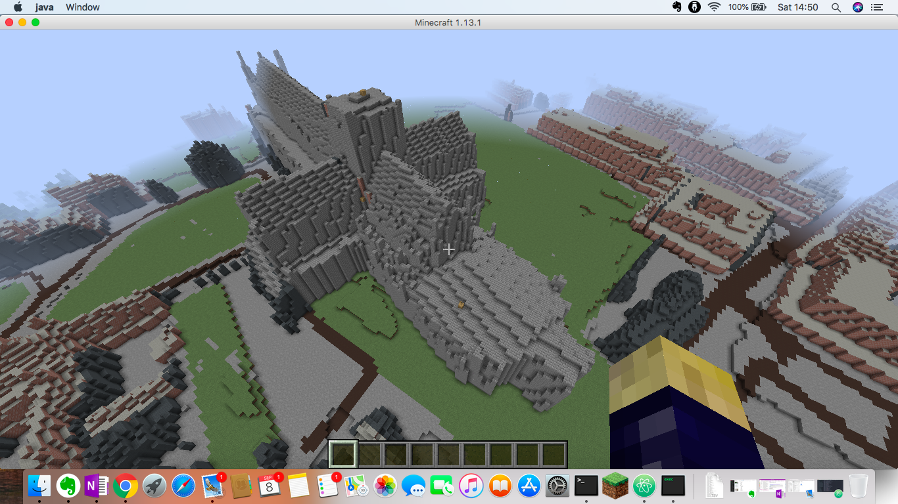
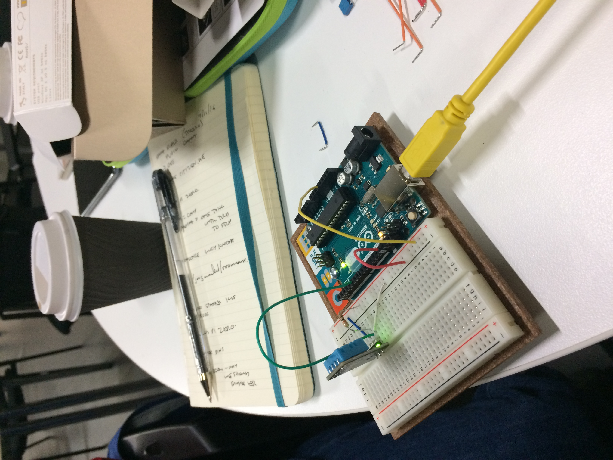

Lucy Knight started her career in optoelectronics in 1995, working in
manufacturing support and engineering strategy. Since 2002 she has worked
in the public sector in roles covering analysis, open data, data strategy
and data science; for the last six years she has also worked as an
independent consultant and trainer in data literacy and open data.
Lucy specialises in making technical topics approachable and engaging, with
extensive experience of creating bespoke materials tailored to the needs
of her audience.
Recent projects include ontology modelling for the public sector,
building virtual learning spaces in Minecraft,
and delivering bespoke workshops on data governance and strategy for an international standards body.
"Excellent session. Excellent content. 1st time in 6 years that data has been explained in such a positive way."
"I didn't know anyone could make data so interesting!"
"Great structure and content, delivered with humour and passion. Thank you!"
"Very knowledgeable and passionate about subject matter."
"Extremely helpful and thought-provoking session."
"(Surprisingly) enjoyable session! Has given me a new way of thinking about data and how it should be used in a positive way to develop our services."
Add screenshots from Green Spaces project
add images from thingscamp or V&A
link to data mince